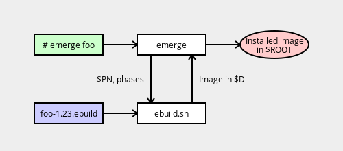
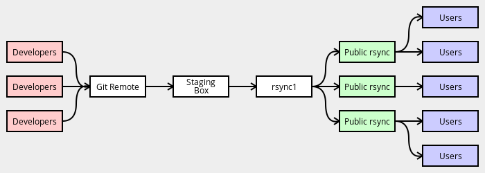

General Concepts
目录
Emerge and Ebuild Relationships

图1 relationship-diagram
emerge 程序是 ebuild.sh 的高级包装，它处理依赖追踪、安全安装和卸载等。 emerge 在构建过程中调用 ebuild.sh ，后者又处理 ebuild 文件和任何 eclass。从 ${D} 到 ${ROOT} 的安装由 emerge 处理。
FEATURES
FEATURES 变量指定影响 portage 操作和软件包编译的选项。它不用于对生成的软件包产生实质性影响的设置。
与开发者相关的 FEATURES 包括：
| Feature | Explanation |
|---|---|
collision-protect |
如果安装的软件包尝试覆盖其他软件包提供的文件，则引发一个错误 |
noauto |
当使用 ebuild 时，仅运行指定的函数 |
sanbox |
开启 sanbox |
sign |
使用 GPG 签名 Manifest 文件 |
strict |
对潜在的危险情况做一些额外的检查（例如缺少 Manifest 文件） |
test |
启用 src_test 阶段 |
userpriv |
在特定的阶段，使用非 root 权限 |
usersandbox |
启用 sanbox，即使运行在非 root 权限 |
Git to RSYNC
对 tree 所做的更改将分阶段传播给用户：
- 开发者 commit 到本地 git cloen 并且 push 到中央远程 git 仓库。commit 和 push 使用 git 基于 GPG 的机制签名。
- staging box 从中央 git 仓库同步，生成元数据缓存，ChangLogs 并从 git 历史记录中签名 Manifests。
rsync1从 staging box 同步- 公共 rsync 服务器从
rysnc1同步 - 用户从公共 rsync 服务器同步

图2 git-to-rsync
Diagram showing Git to RSYNC Propagation
emerge-websync 的快照是每日从 staging box 中生成的。
Mirrors
Mirroring
软件包会自动将其在=SRC_URI=中的组件镜像到 Gentoo mirrors 上，包括托管在官方 Gentoo 基础设施上的那些（即 dev.gentoo.org 中的开发者空间）。当拉取的，包管理器会在尝试从原始上游位置之前先检查 Gentoo mirrors。
这通常是期望的行为 -–— 上游镜像易于重新排列、整理或修改文件。
Restricting Automatic Mirroring
三个 RESTRICT 关键字可以用于控制镜像过程。
RESTRICT="mirror" 设置应该用于如果我们无法合法的镜像特定文件；文件将仍从原始位置下载。
RESTRICT="primayuri" 设置会导致 portage 首先尝试从原始位置下载，然后如果有必要则退回镜像。这不应该新的 ebuild 中使用。
RESTRICT="fetch" 将会阻止 portage 尝试手动获取任何内容。如果找不到任何 SRC_URI 组件，则 pkg_nofetch 函数将会被调用。仅在 license 要求时才应使用此选项。
Sandbox
在 src_unpack 、 src_compile 、 src_test 和 src_install 阶段， ebuild.sh 运行在 sandbox 中。这是一个特殊的环境，它帮助防止错误编写的 ebuild（或与错误编写的构建系统一起工作的 ebuild）意外写在允许的位置之外。
当 sandbox 处于活动状态时所有的软件包都必须正确构建 。软件包不得通过使用狡猾的技巧使 sandbox 警告不显示来达成此目的
sandbox 可以保证二进制软件包正常工作，而且写得不好的 Makefile 不会造成问题。使用 addwrite 通常不是正确的解决方案。
关于 sanbox 相关函数的详细信息请见sandbox函数参考。关键修复 sandbox 相关构建问题的建议请见Handling Access Violations。
Slotting
软件包可以支同时安装多个版本。这对于在不同版本之间可能会改变接口的库很有用
例如， gtk+ 软件包可以同时安装 2.24 和 3.6 版本。这个特性叫做 slotting。
大多数软件包不需要 slotting。这些软件包在 ebuild 中指定 SLOT="0" 。这纯属惯例；包管理器不会将 0 于其他任何 slot 值区别对待。
Note:
SLOT时强制变量并且必须不能为空。
portage 允许每个 SLOT 值最多一个软件包安装实例。例如，说我们有如下内容：
foo-1.1withSLOT="1"foo-1.2withSLOT="1"foo-2.0withSLOT="2"foo-2.1withSLOT="2"
那么用户可能同时安装 foo-1.2 和 foo-2.0 ，但是不能同时安装 foo-1.1 和 foo-1.2 。注意完全有可能用户安装了 foo-2.0 ，而根本没有安装 foo-1.x 。
对于 DEPEND 中特定 slot 的软件包，参考SLOT Dependencies。
Sub-Slots
有时候软件包安装在不同版本之间改变接口的库，但是又不希望或不方便允许同时安装其中一些版本。在 EAPI 5 或更高中，这种情况可以使用 sub-slot 处理，其通过 / 字符于常规 slot 分隔，像 SLOT="slot/subslot" 。当 subslot 的运行时依赖改变时，软件包可以要求自动重新构建。
例如，假设软件包 foo 安装了一个库，其 soname 对于不同的版本时不同的。将 soname 版本用作 sub-slot 的名称时合理的：
foo-1.1installslibfoo.so.5-SLOT="1/5"foo-1.5installslibfoo.so.6-SLOT="1/6"foo-2.0installslibfoo-2.so.0-SLOT="2/0"foo-2.1installslibfoo-2.so.1-SLOT="2/1"
安装了链接到 libfoo-2 （或 libfoo ）的二进制文件的其他 ebuild 可以在安装的 foo:2 或 foo:1 更改 sub-slot 时请求自动重建 —— 例如，当用户从 foo-2.0 升级到 foo-2.1 时。
如果一个 ebuild 没有显式的声明 sub-slot，则将常规 slot 用作 sub-slot 的默认值。
Note:首次在库 ebuild 中使用 sub-slot 时必须小心处理。添加 sub-slot 将会触发已使用 sub-slot 依赖的所有软件包重新构建（例如
media-libs/libpng从 SLOT="0"切换到 SLOT="0/14"并且软件包foo依赖于libpng:0=）。因此，最好在现在库的接口更改时开始在库中使用 sub-slot。
SLot Names
当前版本的 portage 接受以字母数字字符或 - 开始，并且包含字符数字和 _ 、 - 、 . 和 + 字符。
User Environment
用户环境变量和 make.conf 的设置可以传递给 ebuild。这很有用 —— 例如 CFLAGS 和其朋友们的工作方式 —— 但是它也会导致肮脏的 build-breaking 变量（像 LANG 和 LC_ALL ）通过。当前没有对环境进行消毒。
Filtering Variables
某些变量会使某些构建系统非常非常受挫。一个好的例子是 locale 变量（ LC_ALL 等），如果将其设置为某些值，则会导致涉及 [A-Z] 之类的 sed 或 grep 表达式失败。此处最简单的方法是取消设置或在 pkg_setup 中清理有害变量。
取消设置所有与 locale 相关的变量是最简单的方法：
pkg_setup() { # Unset all locale related variables, they can make the # build fail. eval unset ${!LC_*} LANG }
Not Filtering Variables
在另一方面，尽可能尊重某些用户的偏好是非常重要的。一个好的例子是 CFLAGS ，必须予以尊重（选择行过滤是可以的，但是不能完全忽略）。当编译时忽略 CFLAGS 会造成严重的问题：
- 忽略
march/mcpu可能会强制内核或软件模拟一些架构上的某些操作码。这可能很慢 —— 例如，为 SPARC v7 构建的oepnssl却运行在 v9 上大该会使 RSA 操作慢五倍。 - stripping 某些 ABI 相关的 flag 会破坏链接。
- stripping 某些 ABI 相关的 flag 会导致为某些设置产生无效的代码。在极端的例子中，最终可能会出现愚蠢的事情，例如为 little endian CPU 生成 big endian 代码。
- 如果用户的
march/mcpu/mtune被忽略，而是使用自动检测的设置，则 GRP 和 stages 会被破坏。例如，i686平台不再可以在pentium-4上生产，v8平台不再可以在UltraSparc上生产。
一些软件包偶然的会这么做。例如，可能在 Makefile.am 中看到 CFLAGS=-Wall 。为了修复这个，在用户的 CFLAGS 中使用 sed ，或（更好的办法）将变量更改为 AM_CLFAGS ，该变量将自动与用户设置合并。LDFLAGS 也应该受到尊重。
Links
- Filesystem
- The Gentoo Repository
- Virtuals NEED TO READ AGAIN.